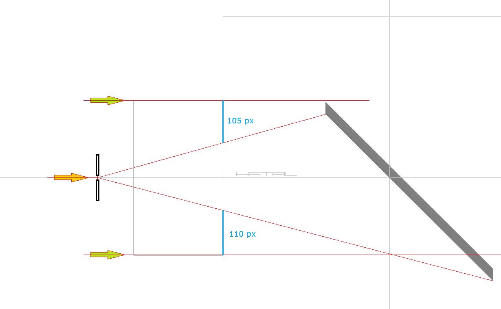
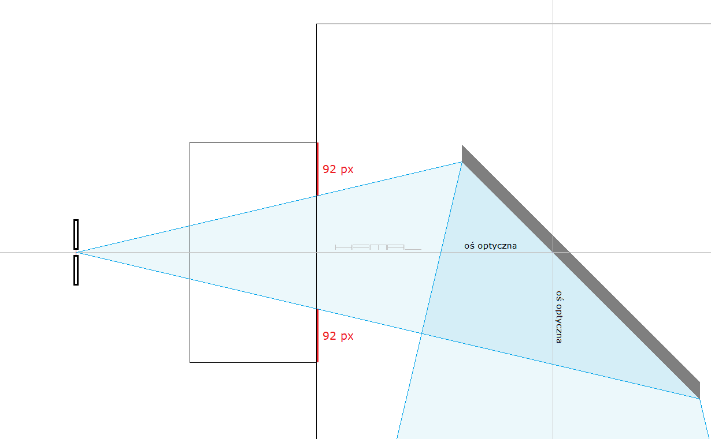
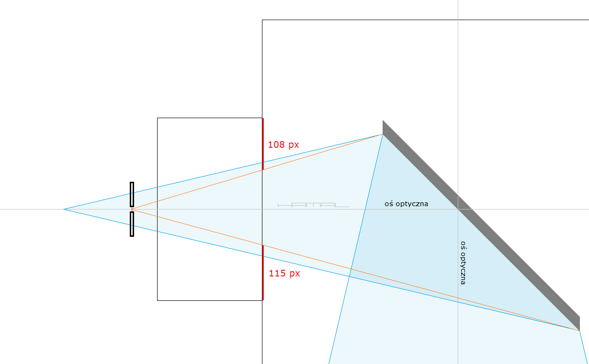
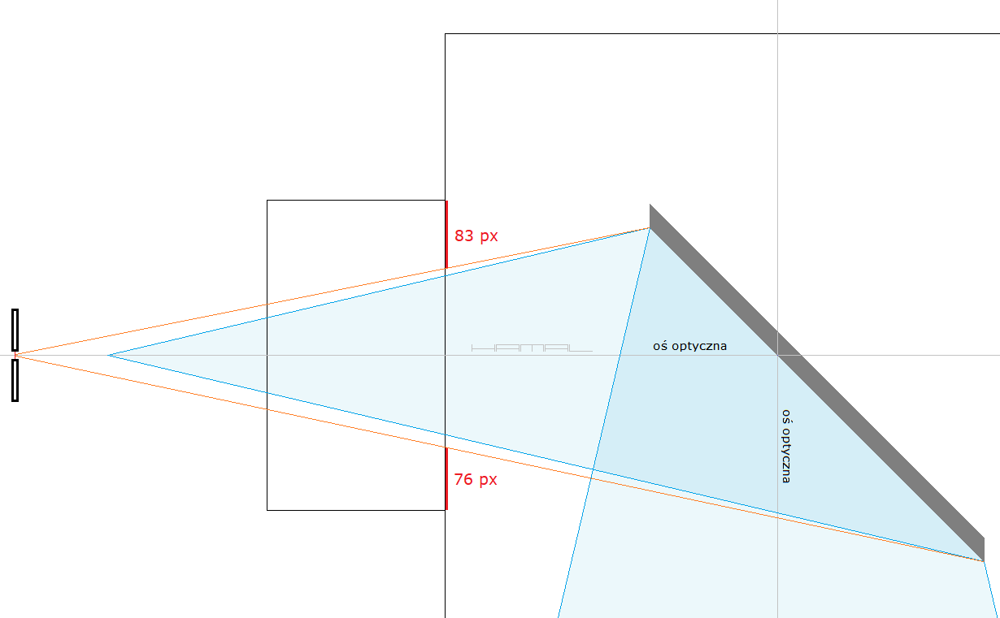

RYGOR . Czyli obligatoryjny warunek poprawnego ustawienia lusterka wtórnego w teleskopie systemu Newtona
27-11-2020
Spróbuję Wam wyjaśnić, za pomocą grafiki, dlaczego dokonując kolimacji teleskopu za pomocą kolimatora z otworkiem lub kamerki, jedynie stosując Rygor kolimacji z ogniska teleskopu, uzyskacie prawidłowy wynik. Spełnienie tego bezwzględnie niezbędnego warunku nie jest w ogóle przywoływane w większości opisów kolimacji, co dziwi.
Wiele poradników i dyskusji o kolimacji zawiera stwierdzenia typu: .
- Nie będziesz w kolimatorze widział równo lusterka wtórnego względem wyciągu, ponieważ masz Offset --- Bez spełnienia Rygoru oczywiście, że tak.
- Wkładasz kolimator do wyciągu i obserwujesz obrys lusterka wtórnego w wyciągu i wyrównujesz --- Nic ważnego po drodze?
- Wkładasz kamerkę do wyciągu i na monitorze obserwujesz obrys lusterka wtórnego w wyciągu i wyrównujesz --- Nic ważnego po drodze?
- Wkładasz kolimator do wyciągu, wysuwasz wyciąg do końca, aby lepiej widzieć obrys lusterka wtórnego w wyciągu --- Wysuwasz do końca? Nie warto dalej czytać.
- Wysuw wyciągu dobierasz tak, aby mieć w kolimatorze wygodnie zgrany obrys lustra głównego w lustrze wtórnym... --- Nie warto dalej czytać tego opisu.
Wszystkie przytoczone badania, należy bezwzględnie wykonywać otworkiem kolimatora/obiektywem kamerki znajdującymi się W OGNISKU TELESKOPU !!!
Ale dlaczego tak?
A no dlatego, że wyciąg okularowy od wewnątrz i lusterko wtórne, obserwujemy kątowo, z okiem umieszczonym centralnie w osi wyciągu, a nie równolegle po jego ściankach, a wtedy miejsce, z którego obserwujemy, ma ogromne znaczenie, o czym zaraz się przekonacie.
Poniżej typowy szkic z dyskusji wyprowadzającej nieprawidłowy wniosek, iż to Offset jest winny temu, że w kolimatorze z otworkiem nic nigdy nie jest ani równo, ani symetrycznie. Nieznajomość opisywanego tu Rygoru kazała doszukać się przyczyny w Offset-cie.
Patrz zielone strzałki --> piszą: "Patrząc wzdłuż ścianek wyciągu, nie będzie widać równo lusterka wtórnego względem ścianek wyciągu." -- No nie będzie, bo jest Offset, ta obserwacja jest pozbawiona sensu, nic nie wnosi, tu nie obserwuje się równolegle, lecz kątowo, w osi. .
W takim razie ...
Patrz żółta strzałka --> piszą: "Patrząc przez kolimator (kątowo w osi), idealnie ogarniające Offset lusterko wtórne, nie będzie widoczne symetrycznie w wyciągu i odległość do ścianek wyciągu nie będzie identyczna, bo jest Offset." -- No tak, widać jak nic poniżej, że odległość na górze wynosi 105 pixeli a na dole 110 pixeli, mają rację, jest nierówno, ale wynika to z faktu braku znajomości i zastosowania Rygoru, o którym niniejszy wątek stanowi, a nie winy Offset-u, jak piszą.

W takim razie zobaczmy, co się stanie, gdy stosując rzeczony Rygor, kolimacji dokonamy z ogniska. Okazuje się, że patrząc przez kolimator z otworkiem z ogniska, prawidłowo zamontowane i idealnie ogarniające Offset lusterko wtórne, będzie widoczne symetryczne w wyciągu, a odległość od ścianek wyciągu będzie identyczna wszędzie!

Zobaczmy (poniżej) dla odmiany, co się stanie, gdy po prawidłowej kolimacji, badania jej dokonamy przed ogniskiem. Okazuje się, że patrząc przez kolimator z otworkiem (ze złego miejsca), prawidłowo zamontowane i idealnie ogarniające Offset lusterko wtórne nie będzie widoczne symetryczne w wyciągu i odległość od ścianek wyciągu nie będzie identyczna. Brak zastosowania Rygoru zmyli kolimującego, dając fałszywy wynik niby nieprawidłowej kolimacji.

No i jeszcze, zobaczmy (poniżej), co się stanie, gdy po prawidłowej kolimacji, badania jej dokonamy za ogniskiem. Okazuje się, że patrząc przez kolimator z otworkiem (ze złego miejsca), prawidłowo zamontowane i idealnie ogarniające Offset lusterko wtórne nie będzie widoczne symetryczne w wyciągu i odległość od ścianek wyciągu nie będzie identyczna. Brak zastosowania Rygoru zmyli kolimującego, dając fałszywy wynik niby nieprawidłowej kolimacji.

Wniosek ? Aby dokonać prawidłowej kolimacji teleskopu kolimatorem z otworkiem lub kamerką, należy stosować opisany tu Rygor. Wszystkie przytoczone operacje należy wykonywać Z OGNISKA TELESKOPU
JAK USTALIĆ GDZIE JEST OGNISKO W TELESKOPIE ?
Ognisko, czyli miejsce spotkania się wszystkich wiązek światła skupianych przez lustro główne wypada zazwyczaj za wyciągiem okularowym. W tym miejscu "w powietrzu" powstaje obraz, który na zasadzie lupki, obserwuje umieszczony w wyciągu okularowym okular. Aby ustalić, gdzie dokładnie ognisko występuje, najlepiej w nocy skierować teleskop na Księżyc lub w dzień na baaardzo odległe zabudowania, lub drzewa, do końca wyciągu przytknąć matową plexi, i wsuwając lub wysuwając wyciąg, odnaleźć miejsce, w którym na tym plexi pojawi się ostry obraz Księżyca, lub terenu. To w tym miejscu mamy ognisko teleskopu.